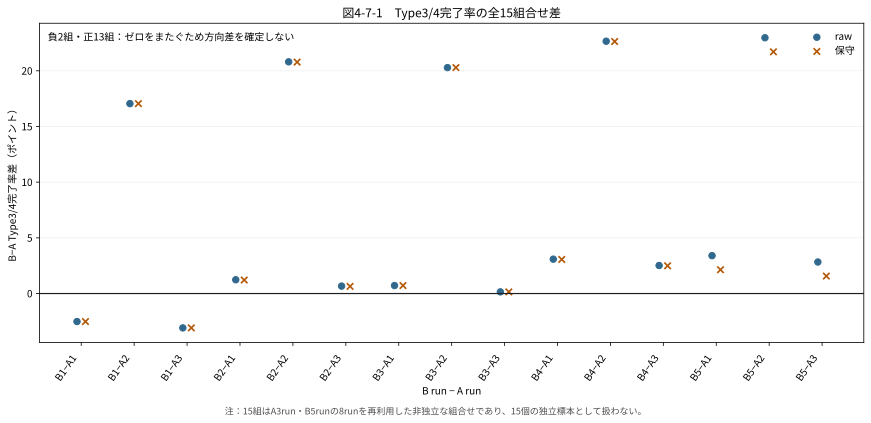
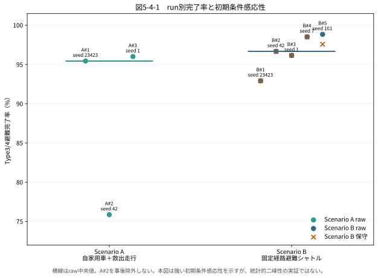
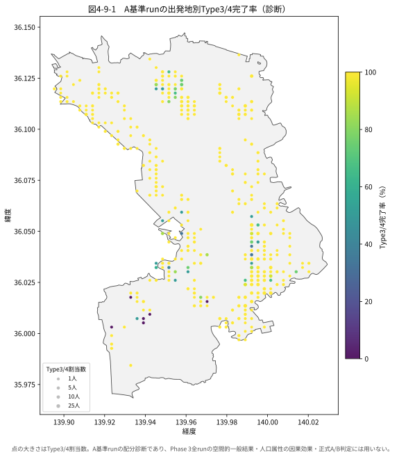
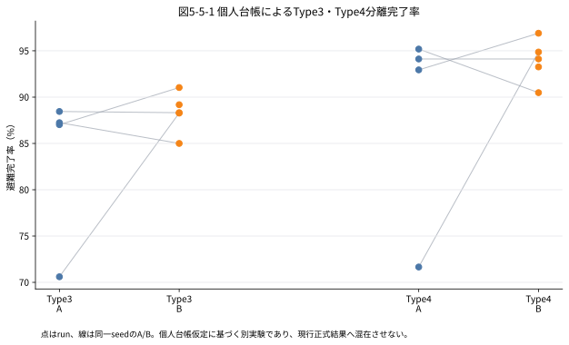

自家用車8,164台＋救出走行1,405台のScenario Aを3run、自家用車8,164台＋救出走行1,351台＋デマンド交通車両転用型の固定経路避難シャトルのScenario Bを5run実行しました。現行Bは予約に応じて経路を最適化する動的DRTではありません。
正式判定指標の比較
正式判定にはType 3/4避難完了率だけを使用します。数値は表示用に丸め、判定には正本の未丸め値を使用しています。
| 指標 | A：自家用車＋救出走行 | B：固定経路シャトル raw | B：保守集計 | 判定 |
|---|---|---|---|---|
| 完了率中央値 | 95.44% | 96.68% | 96.65% | 中央値はBが高い |
| 最小〜最大 | 75.87〜96.01% | 92.93〜98.84% | 92.93〜98.51% | run間変動あり |
| B−A中央値差 | 基準 | +1.23 pt | +1.21 pt | 点推定だけで方向判断しない |
| 全15組合せ差 | — | −3.09〜+22.97 pt | −3.09〜+22.63 pt | 0をまたぐ |
| 15組の符号 | — | 正13／負2／零0 | 正13／負2／零0 | 符号非一貫 |
正式結論：本研究で実施した条件と試行回数の範囲では、デマンド交通車両を固定経路避難シャトルとして導入した場合と、バスを導入せず自家用車と救出走行で避難した場合の間で、Type3/4避難完了率の一貫した改善または悪化は確認できませんでした。本モデルの分解能では、方向性のある差を検出できませんでした。
中央値差+1.23ポイントだけを改善方向とは読みません。また、「効果がない」「同等」とも解釈しません。
試行別の取得結果
8 runの完了率とバス到着人数を表示
| run | seed | raw完了率 | 保守完了率 | rawバス到着 |
|---|---|---|---|---|
| A#1 | 23423 | 95.44% | 95.44% | — |
| A#2 | 42 | 75.87% | 75.87% | — |
| A#3 | 1 | 96.01% | 96.01% | — |
| B#1 | 23423 | 92.93% | 92.93% | 75人 |
| B#2 | 42 | 96.68% | 96.65% | 125人 |
| B#3 | 1 | 96.16% | 96.16% | 122人 |
| B#4 | 7 | 98.53% | 98.51% | 125人 |
| B#5 | 101 | 98.84% | 97.58% | 165人 |
A#2は75.87%の低完了状態です。正規の有効runとして保持し、事後除外しません。同じseed 42でもfull-busのB#2はraw 96.68%で低完了ではなく、A#2の低位をB#2へ一般化しません。
Type3・Type4分離会計の追加診断
3,255人へA/B共通の個人IDを付け、バスと救出走行の重複を除いた別会計を実装しました。Type4高齢者の完了率中央値はA側4runが93.53%、B側5runが94.12%でした。
| 種別 | 中央値 | 範囲 | 符号 |
|---|---|---|---|
| Type3 | +1.94 pt | −2.24〜+17.67 pt | 正2・負2 |
| Type4 | +1.98 pt | −4.71〜+23.21 pt | 正2・負1・ゼロ1 |
読み取り：Type4だけに分けても差の符号は一致せず、バスが高齢者の逃げ遅れを一貫して減らしたとは判断できません。既存ログへ個人台帳を接続した追加診断であり、正式8runの判定を置き換えません。
5組目のA側seed 101は強い渋滞で完走時間が現実的でなかったため未完・集計対象外です。
正式結果と診断を示す図
{kind=link}

{kind=link}

{kind=link}

{kind=link}

記述・診断指標
| 指標 | A：自家用車＋救出走行 | B：固定経路シャトル | 読み取り上の制約 |
|---|---|---|---|
| 全車両到着率・中央値 | 94.99% | 96.24% | 交通流の診断値 |
| 全車両到着率・範囲 | 80.62〜95.30% | 94.59〜97.27% | A#2の非到着の影響あり |
| 遅い10%の平均所要時間・中央値 | 102.2分 | 111.5分 | 到着車両のみ、Bのバス乗客を含まない |
| 遅い10%の平均所要時間・範囲 | 92.9〜109.6分 | 107.8〜115.9分 | 完了率と必ず対で読む |
worst-offは車単位・到着者条件付き・B側バス乗客非含有です。この値だけでバス導入の政策効果や公平性の方向を判定できません。
解釈上の限界
避難開始時刻の均一仮定、固定経路運行、実際の予約型DRT・避難行動・運行制約との乖離、常総市外へ一般化できない点を主な限界とします。出発地診断と完了時間は補助・診断であり、正式な方向判定には用いません。